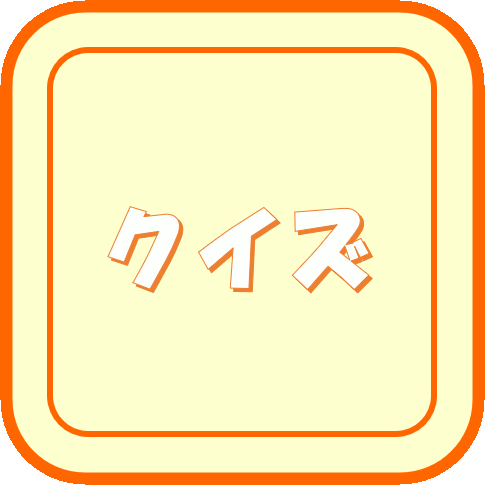
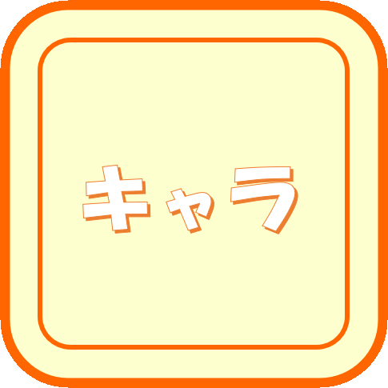

?
?
 
（青本、青問、薬ゼミ模試より問題を抜粋。追加してキャラクター解説は薬単 第1版、薬名[語源]事典に基づく。流布しないこと。）
?
ふっかつのじゅもん方式です。そちらのほうで、下に示されたコードを控えて置いて下さい。問題のブックマークや、キャラクターの獲得状況がコード化されています。どこかにコピペしておき、下の「データのロード」ボタンを押してコードを入力してください。
| 角、やや乱雑な髪 | ヤクっぽさ。 |
| 口を結んでいる | 遮断薬、拮抗薬 |
| 口が笑っている | アゴニスト |
| 黄色の髪 | 黄色はNaの炎色反応の色。作用機序に関わる。 |
| 緑色の服装 | コカイン、プロカイン、アミノ安息香酸エチル、テトラカイン（エメラルドグリーンの頭文字の「エ」は、エステル型の「エ」。こじつけ！） |
| 植物の髪飾り | コカイン（植物由来） |
| 眠そうに眼を閉じている | コカイン（麻薬である） |
| ベールに覆われている | コカイン、リドカイン（表面麻酔で用いる） |
| タイトなベルト | コカイン、メピバカイン（血管収縮作用を併せ持つ） |
| 水に浸かっている | プロカイン（表面麻酔不可で注射のみ） |
| 日焼け | アミノ安息香酸エチル、オキセサゼイン（酸性部位でも薬効を発揮する。酸とSunのダジャレ） |
| 網靴下 | リドカイン、メピバカイン、オキセサゼイン（「網」は「アミ」ド型の「あみ」というダジャレ） |
| 黄色のネクタイ | 炎色反応の色から。Na遮断薬。 |
| 紫色のネクタイ | 炎色反応の色から。K遮断薬。 |
| 長いネクタイ | 1a群。活動電位持続時間を延長する。 |
| 短いネクタイ | 1b群。活動電位持続時間を短縮する。 |
| 中くらいのネクタイ | 1c群。活動電位持続時間に影響しない。 |
| 青い紐のリボン | 2群。（結び目の丸が2つあるから2群。赤色はα、青色はβ受容体と自分の中でルールを決めている。） |
| 紫の帯のリボン | 3群。（結び目の丸が3つあるから3群。炎色反応の色から、K遮断薬） |
| オレンジのバタフライボウ | 4群。（結び目の丸が4つあるから4群。炎色反応の色から、Ca遮断薬）） |
| 植物の髪飾り | キニジン、アトロピン（植物由来） |
| 花の髪飾り | アミオダロン(ケラの成分、ケリンが由来) |
| 緑色の服など、局所麻酔薬のプロカインと類似した恰好 | プロカインアミド、フレカイニド（プロカイン類似の構造のもの） |
| 黄色の服など、局所麻酔薬のリドカインと類似した恰好 | リドカインや、ピルシカイニド（リドカイン類似の構造のもの） |
| 水を持っている | ジソピラミド（口渇の副作用） |
| アメをなめている | シベンゾリン（低血糖の副作用） |
| ギザギザした髪 | アプリンジン（「プ」は、炭素数３のプロピル構造の「プ」→3つに折れた髪） |
| 水に足を浸し、手を見ている | メキシレチン（糖尿病性神経障害に用いられる→手足をケアしている） |
| 角に青い飾り | プロパフェノン、アミオダロン、ソタロール、イソプレナリン（β受容体に作用する。暫定的に赤い玉飾りはα、青い玉飾りはβ受容体としている） |
| 青いエプロン | プロプラノロール、ソタロール、イソプレナリン（アドレナリンは副腎皮質から分泌→副腎→腎臓→血液ろ過→清掃員→エプロンという連想） |
| 黄色のヘアピン | アミオダロン、ベプリジル（炎色反応の色から。Na遮断薬） |
| オレンジのヘアピン | ソタロール（炎色反応の色から。Ca遮断薬） |
| 紫のヘアピン | ニフェカラント、ベプリジル（炎色反応の色から。K遮断薬） |
| ポピーの胸飾り | ベラパミル（ポピーの植物由来） |
| チャイナ服 | アトロピン（アセチルコリンは神経節にあるため、シナプス→シナ→支那→チャイナという連想） |
| 長いしっぽ | アトロピン（根っこを用いるため） |
| 髪の毛を後ろで2つに分けている | イソプレナリン（イソプロピル基の形状） |
| 植物っぽいヘルメットの飾り | ジゴキシン、コルホルシンダロパート（植物由来） |
| 紫色の鐘 | ジゴキシン（基原植物のジギタリスを表す。花が紫色のベルのような形状をしている。） |
| とび口 | コルホルシンダロパート（AC活性化→アデニル酸の構造をひっかけて輪にする→ひっかける道具→とび口という連想） |
| 縄 | ミルリノン・オルプリノン（PDEⅢ阻害→cAMPを分解させない→救助→命綱？→縄という、なんとなく連想） |
| 消防ホース | ブクラデシン（cAMP誘導体→輪っかの構造→中空→ホースという連想） |
| 筒 | カルペリチド（インパルス消火システムをイメージしている。水を放出→利尿→ANPという連想） |
| 花火玉 | ニトログリセリン（火薬の原料） |
| 綿あめ | 硝酸イソソルビド（イソソルビドは糖の一種） |
| 紫色の鉢巻き | ニコランジル（炎色反応の色から。Kチャネル開口作用を有する） |
| スイカ | ニコランジル（スイカにはKが豊富に含まれている。Kは機序に関わる） |
| オレンジのリボン | ジルチアゼム、Ca遮断薬（オレンジ＝Caの炎色反応） |
| ハチマキ | ジルチアゼム（虚血性心疾患のモチーフ） |
| 花かざり | ニフェジピン（ケラの成分、ケリンが由来。アミオダロンと同じ。） |
| 長いリボン | アムロジピン（作用時間長く効果の表れが緩徐） |
| 青い髪飾り | シルニジピン（NAd遊離抑制） |
| 三つの玉飾り、帽子 | ACE阻害薬（トリペプチドが構造のもとになっている。プロドラッグ。） |
| 釣り竿 | カプトプリル（名前の由来ともなっている構造中のメルカプト基は、金属と結合しやすいことが知られている。もともとは「水銀をとらえるもの」（マーキュリーキャプチャー）がなまって略されたものである。ACEの活性中心は亜鉛原子があるため、ACEと結合し作用するために、亜鉛とくっつきやすいメルカプト基が導入されたという経緯がある。何かをひっかける、ひっつけるという意味を込め、釣り竿にした。） |
| 腰に手を当てている | イミダプリル、ロサルタン（腎保護） |
| 食卓で寝ている。 | テルミサルタン（食後投与では血中濃度が低下する） |
| 灰色っぽい青色のリボン | アリスキレン（Aliceblue色→アリス→アリスキレン） |
| 青い目 | グラム陰性菌に効果（一概にスペクトルが言えるわけではないので参考までに） |
| 紫の目 | グラム陽性菌に効果（一概にスペクトルが言えるわけではないので参考までに） |
| 数珠 | ペニシリン系（基原であるアオカビの胞子が、数珠のようにみえる） |
| 日焼けしている | アモキシシリン（Sun＝酸＝胃酸＝胃＝ピロリ菌除去） |
| 青の数珠 | アンピシリン（Aminoがその名の由来。Aminoは青色のイメージがある。） |
| 青と赤の数珠 | アモキシシリン（AminoとHydroxyがその名の由来。Aminoは青色の、Hydroxyは赤色のイメージがある） |
| 青の数珠と羽織 | バカンピシリン（アンピシリンのプロドラッグ） |
| 手を広げ、緑の数珠を持っている | ピペラシリン（広域。緑膿菌に効果。） |
| 笠 | セフェム系（形状によって分類をねらう。一文字笠、次郎長笠、三度笠をイメージし、世代を表す） |
| ばらばらの笠 | セファレキシン（βラクタマーゼで分解されるため。逆に言えば、他のセフェム系薬は分解されない。なお、笠は一文字笠をイメージ＝第一世代） |
| 酔っぱらっている | セフメタゾール（ジスルフィラム様作用を示すため、飲酒すると二日酔いの不快感を引き起こす。なお、笠は次郎長笠をイメージ＝第二世代） |
| 三度笠 | セフカペン、セフジニル（第三世代） |
| 金属の枝切りばさみ | セフジニル（キレートを形成しやすい。キレート＝はさみ） |
| 箒 | カルバペネム系（理由なし） |
| 数珠をもったキャラクターをもてなしている | βラクタマーゼ阻害薬（クラブラン酸、スルバクタム）（ペニシリン系を増強させる） |
| 煉瓦を置き、赤いタオルを首にかけて耳のあたりや腰のあたりに手を置いている | バンコマイシン（細胞壁合成に関わる。レッドネック症候群の恐れがあるので時間をかけて投与する。聴覚障害、腎障害の副作用がある） |
| 煉瓦を加工している | ホスホマイシン（UDPサイクルを阻害し、壁合成を阻害する） |
| 紫の傘 | ダプトマイシン（膜を脱分極し、カリウム（炎色反応で紫）を流出させる） |
| 本を読む、持つ | アミノグリコシド系、テトラサイクリン系（３０Sリボソームに作用する。３０SリボソームはmRNAの情報を読み取る。） |
| 緑色の本 | 緑膿菌に効果（アミカシン、ゲンタマイシン） |
| 黄色の本 | MRSAに効果（アルベカシン） |
| 耳当てをつけ、腰のところで本を持つ。 | アミノグリコシド系。青い耳の部分が耳あてのつもり。（聴覚障害、腎障害の副作用がある） |
| ぽっちゃり | ストレプトマイシン、カナマイシン（結核菌に有効→結核菌は特徴的な脂肪酸、ミコール酸をもっている→脂肪→ぽっちゃり） |
| 金色の水引を頭につけている | カナマイシン、アミカシン、アルベカシン（カナマイシンは、長野県の土壌で発見されたStreptomyces kanamyceticusが基原。この「カナ」は実は日本語であり、菌の色が「カナ色」＝金色になることがその由来である。ところで水引細工は長野県の名物の一つである。金色の水引をもってカナマイシンを表した。アミカシン、アルベカシンはカナマイシンが構造のもとになっている） |
| 何かをかく | クロラムフェニコール、マクロライド系、リンコマイシン系（５０Sリボソームに作用する。５０Sリボソームはペプチド形成に作用する＝出力＝かく） |
| 灰色の煙 | クロラムフェニコール（幼児に投与すると、灰色症候群のおそれがある） |
| 大きな紙に書く | マクロライド系（マクロの名でわかるよう、大きな環構造を有している） |
| なお、左から左からエリスロマイシン、クラリスロマイシン、アジスロマイシン。 | |
| 日焼けしている | クラリスロマイシン（Sun＝酸＝胃酸＝胃＝ピロリ菌除去） |
| キリンをかいている | アジスロマイシン（ほかの2キャラ＝エリスロマイシン、クラリスロマイシンは、猪や狸かなにかをかいているが、これは害獣である（害＝阻害＝CYP3A4阻害）。キリンは害獣とかそういうくくりではないと思う（CYP3A4阻害作用無し）。また、キリンは首が長い＝作用が持続） |
| 4冊の本、はさみ | テトラサイクリン系（テトラ→４という数字。はさみ＝キレート形成しやすい） |
| 青色や赤色の象 | リンコマイシン系（リンコマイシンは、アメリカはネブラスカの州都、リンカーン付近の土壌から採取された、Streptomyces lincolnensisがその基原である。「リンカーン」の名の由来は、かつての共和党出身の大統領、エイブラハム・リンカーンからきている。共和党のイメージキャラクターは、象である。青や赤はアメリカンカラー。） |
| 読みながらかく | オキサゾリジノン系（７０Sリボソームの形成を阻害） |
| 黄色の本 | MRSAに効果 |
| 黒っぽい葉っぱっぽい装飾、葉に水をやる | スルホンアミド系（葉酸代謝に作用。黒っぽい葉っぱっぽい装飾は、石炭をイメージしたらこうなった。スルホンアミド系のもとをたどれば、石炭、コールタールである） |
| つる植物の実を収穫する。はさみ。 | キノロン系（DNAジャイレースに作用。妊婦に禁忌。キレート形成しやすい） |
| コピー機 | リファリファンピシン(RNAポリメラーゼ阻害) |
| ロウソクを持っている、隣で笑っている | イソニアジド、ピラジナミド（作用点であるミコール酸は天然のロウやワックス成分であるため。ピラジナミドはイソニアジドを増強する。） |
| 髪を編んでいる。眼鏡をかけている。 | エタンブトール（作用である核酸合成阻害を、髪を編んでいる様子に見立てた。視力障害の副作用は眼鏡に見立てた。） |
| 腰のカバン | アゾール系抗真菌薬(肝障害の副作用。カバンの位置から肝臓をイメージ。) |
| 石鹸と液体石鹸 | イトラコナゾール(剤形にカプセルと液剤があるのを、石鹸の種類で連想) |
| 眼鏡をかけている、表に書いている | ボリコナゾール(視覚障害の副作用もある。TDMの対象である。) |
| 手袋 | エフィナコナゾール、ルリコナゾール(爪に効くので、爪→手→手袋を連想。また、手に持っているのはアルコールスプレーをイメージした。) |
| 蜘蛛の巣を掃除 | テルビナフィン、ブテナフィン(作用であるスクアレンエポキシダーゼ→エポキシの環状構造を、蜘蛛の巣でイメージ) |
| 配管を掃除 | ポリエンマクロライド系(消化管殺菌に用いるため) |
| 壁を掃除 | ミカファンギン（壁合成を阻害するため） |
| 六角形の電灯、ねじねじの蛍光灯 | フルシトシン（フルオロウラシル系の薬である。フッ素→蛍石の構成成分→蛍光を放つ→蛍光灯。ウラシル→ピリミジン塩基→構造は六角形。核酸合成阻害→核酸といえば二重らせん→ねじねじの形） |
| 箱を開けている | アマンタジン（脱殻を、箱を開けることに連想。あと、耳にイヤリングをしているのは、アダマンタン構造からダイヤモンドを連想。） |
| ドローンを飛ばしている | ノイラミニダーゼ阻害薬（ウイルスの放出を連想している） |
| 帽子をかぶっている | バロキサビル（作用点にかかわる”キャップ”から、帽子のキャップを連想。なお、イラストでパイプを切っているのも、エンドヌクレアーゼの作用を連想） |
| パーツを組み立てている | ファビピラビル（RNAポリメラーゼ作用を連想） |